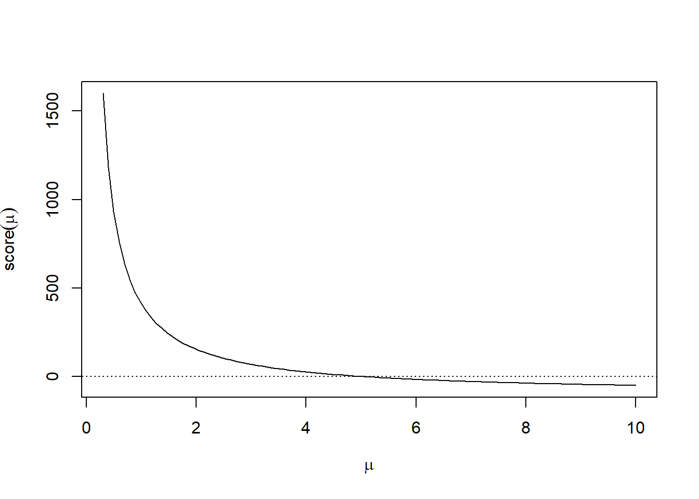
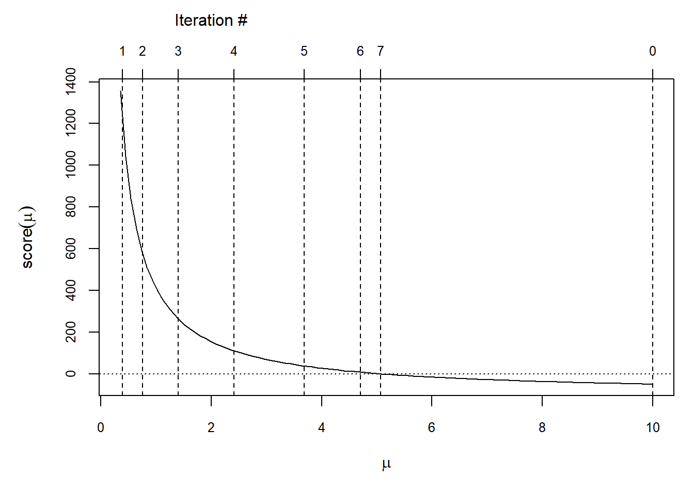

2.4 Newton’s Method
Newton’s method build a sequence of values \(\{x_n\}\) via functional iteration that converges to the root of a function \(f\). Let that root be called \(x_\infty\) and let \(x_n\) be the current estimate. By the mean value theorem, we know there exists some \(z\) such that \[ f(x_n) = f^\prime(z)(x_n-x_\infty), \] where \(z\) is somewhere between \(x_n\) and \(x_\infty\). Rearranging terms, we can write \[ x_\infty = x_n-\frac{f(x_n)}{f^\prime(z)} \] Obviously, we do not know \(x_\infty\) or \(z\), so we can replace them with our next iterate \(x_{n+1}\) and our current iterate \(x_n\), giving us the Newton update formula, \[ x_{n+1} = x_n - \frac{f(x_n)}{f^\prime(x_n)}. \]
We will discuss Newton’s method more in the later section on general optimization, as it is a core method for minimizing functions.
2.4.1 Proof of Newton’s Method
Newton’s method can be written as a functional iteration that converges to a fixed point. Let \(f\) be a function that is twice continuously differentiable and suppose there exists a \(x_\infty\) such that \(f(x_\infty) = 0\) and \(f^\prime(x_\infty)\ne 0\). Then there exists a \(\delta\) such that for any \(x_0\in(x_\infty-\delta, x_\infty+\delta)\), the sequence \[ x_n = g(x_{n-1}) = x_{n-1} - \frac{f(x_{n-1})}{f^\prime(x_{n-1})} \] converges to \(x_\infty\).
Note that \[\begin{eqnarray*} g^\prime(x) & = & 1-\frac{f^\prime(x)f^\prime(x)-f(x)f^{\prime\prime}(x)}{[f^\prime(x)]^2}\\ & = & \frac{f(x)f^{\prime\prime}(x)}{[f^\prime(x)]^2} \end{eqnarray*}\]Therefore, \(g^\prime(x_\infty) = 0\) because we assume \(f(x_\infty) = 0\) and \(f^\prime(x_\infty)\ne 0\). Further we know \(g^\prime\) is continuous because we assumed \(f\) was twice continuously differentiable.
Therefore, given \(K < 1\), there exists \(\delta > 0\) such that for all \(x\in(x_\infty-\delta, x_\infty+\delta)\), we have \(|g^\prime(x)|< K\). For any \(a, b\in(x_\infty-\delta, x_\infty+\delta)\) we can also write \[\begin{eqnarray*} |g(a)-g(b)| & \leq & |g^\prime(c)||a-b|\\ & \leq & K|a-b| \end{eqnarray*}\]In the interval of \(x_\infty\pm\delta\) we have that \(g\) is a shrinking map. Therefore, there exists a unique fixed point \(x_\infty\) such that \(g(x_\infty)=x_\infty\). This value \(x_\infty\) is a root of \(f\).
2.4.2 Convergence Rate of Newton’s Method
Although proof of Newton’s method’s convergence to a root can be done using the Shrinking Lemma, the convergence rate of Newton’s method is considerably faster than the linear rate of generic shrinking maps. This fast convergence is obtained via the additional assumptions we make about the smoothness of the function \(f\).
Suppose again that \(f\) is twice continuously differentiable and that there exists \(x_\infty\) such that \(f(x_\infty) = 0\). Given some small \(\varepsilon > 0\), we can approximate \(f\) around \(x_\infty\) with \[\begin{eqnarray*} f(x_\infty+\varepsilon) & = & f(x_\infty) + \varepsilon f^\prime(x_\infty)+\frac{\varepsilon^2}{2}f^{\prime\prime}(x_\infty) + O(\varepsilon^2)\\ & = & 0 + \varepsilon f^\prime(x_\infty)+\frac{\varepsilon^2}{2}f^{\prime\prime}(x_\infty) + O(\varepsilon^2) \end{eqnarray*}\]Additionally, we can approximate \(f^\prime\) with \[ f^\prime(x_\infty+\varepsilon) = f^\prime(x_\infty) + \varepsilon f^{\prime\prime}(x_\infty) + O(\varepsilon) \]
Recall that Newton’s method generates the sequence \[ x_{n+1} = x_n - \frac{f(x_n)}{f^\prime(x_n)}. \]
Using the time-honored method of adding and subtracting, we can write this as \[ x_{n+1} - x_\infty = x_n - x_\infty - \frac{f(x_n)}{f^\prime(x_n)}. \]
If we let \(\varepsilon_{n+1}=x_{n+1} - x_\infty\) and \(\varepsilon_n=x_n - x_\infty\), then we can rewrite the above as \[ \varepsilon_{n+1} = \varepsilon_n - \frac{f(x_n)}{f^\prime(x_n)} \]
Further adding and subtracting (i.e. \(x_n = x_\infty + \varepsilon_n\)) gives us \[ \varepsilon_{n+1} = \varepsilon_n - \frac{f(x_\infty+\varepsilon_n)}{f^\prime(x_\infty+\varepsilon_n)} \]
From here, we can use the approximations written out earlier to give us \[\begin{eqnarray*} \varepsilon_{n+1} & \approx & \varepsilon_n - \frac{\varepsilon_n f^\prime(x_\infty) + \frac{\varepsilon_n^2}{2}f^{\prime\prime}(x_\infty)}{f^\prime(x_\infty)+\varepsilon_n f^{\prime\prime}(x_\infty)}\\ & = & \varepsilon_n^2\left(\frac{\frac{1}{2}f^{\prime\prime}(x_\infty)}{f^\prime(x_\infty) + \varepsilon_n f^{\prime\prime}(x_\infty)}\right) \end{eqnarray*}\]Dividing by \(\varepsilon_n^2\) on both sides gives us \[ \frac{\varepsilon_{n+1}}{\varepsilon_n^2} \approx \frac{\frac{1}{2}f^{\prime\prime}(x_\infty)}{f^\prime(x_\infty) + \varepsilon_n f^{\prime\prime}(x_\infty)} \]
As \(\varepsilon_n\downarrow 0\), we can say that there exists some \(M<\infty\) such that \[ \frac{|\varepsilon_{n+1}|}{|\varepsilon_n|^2} \leq M \] as \(n\rightarrow\infty\), which is the definition of quadratic convergence. Of course, for this to work we need that \(f^{\prime\prime}(x_\infty)<\infty\) and that \(f^\prime(x_\infty)\ne 0\).
In summary, Newton’s method is very fast in the neighborhood of the root and furthermore has a direct multivariate generalization (unlike the bisection method). However, the need to evaluate \(f^\prime\) at each iteration requires more computation (and more assumptions about the smoothness of \(f\)). Additionally, Newton’s method can, in a sense, be “too fast” in that there is no guarantee that each iteration of Newton’s method is an improvement (i.e. is closer to the root). In certain cases, Newton’s method can swing wildly out of control and diverge. Newton’s method is only guaranteed to converge in the neighborhood of the root; the exact size of that neighborhood is usually not known.
2.4.3 Newton’s Method for Maximum Likelihood Estimation
In many statistical modeling applications, we have a likelihood function \(L\) that is induced by a probability distribution that we assume generated the data. This likelihood is typically parameterized by a vector \(\theta\) and maximizing \(L(\theta)\) provides us with the maximum likelihood estimate (MLE), or \(\hat{\theta}\). In practice, it makes more sense to maximize the log-likehood function, or \(\ell(\theta)\), which in many common applications is equivalent to solving the score equations \(\ell^\prime(\theta) = 0\) for \(\theta\).
Newton’s method can be applied to generate a sequence that converges to the MLE \(\hat{\theta}\). If we assume \(\theta\) is a \(k\times 1\) vector, we can iterate \[ \theta_{n+1} = \theta_n - \ell^{\prime\prime}(\theta_n)^{-1}\ell^\prime(\theta_n) \] where \(\ell^{\prime\prime}\) is the Hessian of the log-likelihood function.
Note that the formula above computes an inverse of a \(k\times k\) matrix, which should serve as an immediate warning sign that this is not how the algorithm should be implemented. In practice, it may make more sense to solve the system of equations \[ [\ell^{\prime\prime}(\theta_n)]\theta_{n+1} = [\ell^{\prime\prime}(\theta_n)]\theta_n-\ell^\prime(\theta_n). \] rather than invert \(\ell^{\prime\prime}(\theta_n)\) directly at every iteration.
However, it may make sense to invert \(\ell^{\prime\prime}(\theta_n)\) at the very end of the algorithm to obtain the observed information matrix \(-\ell^{\prime\prime}(\hat{\theta})\). This observed information matrix can be used to obtain asymptotic standard errors for \(\hat{\theta}\) for making inference about \(\theta\).
2.4.3.1 Example: Estimating a Poisson Mean
Suppose we observe data \(x_1, x_2, \dots, x_n\stackrel{iid}{\sim}\text{Poisson}(\mu)\) and we would like to estimate \(\mu\) via maximum likelihood. The log-likelihood induced by the Poisson model is \[ \ell(\mu) = \sum_{i=1}^n x_i\log\mu - \mu = n\bar{x}\log\mu - n\mu \] The score function is \[ \ell^\prime(\mu) = \frac{n\bar{x}}{\mu}-n \] It is clear that setting \(\ell^\prime(\mu)\) to zero and solving for \(\mu\) gives us that \(\hat{\mu}=\bar{x}\). However, we can visualizing \(\ell^\prime(\mu)\) and see how the Newton iteration would work in this simple scenario.
set.seed(2017-08-09)
x <- rpois(100, 5)
xbar <- mean(x)
n <- length(x)
score <- function(mu) {
n * xbar / mu - n
}
curve(score, .3, 10, xlab = expression(mu), ylab = expression(score(mu)))
abline(h = 0, lty = 3)
The figure above shows that this is clearly a nice smooth function for Newton’s method to work on. Recall that for the Newton iteration, we also need the second derivative, which in this case is \[ \ell^{\prime\prime}(\mu) = -\frac{n\bar{x}}{\mu^2} \]
So the Newton iteration is then \[\begin{eqnarray*} \mu_{n+1} & = & \mu_n - \left[-\frac{n\bar{x}}{\mu_n^2}\right]^{-1}\left(\frac{n\bar{x}}{\mu_n}-n \right)\\ & = & 2\mu_n-\frac{\mu_n^2}{n} \end{eqnarray*}\]Using the functional programming aspects of R, we can write a function that executes the functional iteration of Newton’s method for however many times we which to run the algorithm.
The following Iterate() code takes a function as argument and generates an “iterator” version of it where the number of iterations is an argument.
Funcall <- function(f, ...) f(...)
Iterate <- function(f, n = 1) {
function(x) {
Reduce(Funcall, rep.int(list(f), n), x, right = TRUE)
}
}Now we can pass a single iteration of the Newton step as an argument to the Iterate() function defined above.
single_iteration <- function(x) {
2 * x - x^2 / xbar
}
g <- function(x0, n) {
giter <- Iterate(single_iteration, n)
giter(x0)
}Finally, to facilitate plotting of this function, it is helpful if our iterator function is vectorized with respect to n. The Vectorize() function can help us here.
g <- Vectorize(g, "n")Let’s use a starting point of \(\mu_0 = 10\). We can plot the score function along with the values of each of the Newton iterates for 7 iterations.
par(mar = c(5, 5, 4, 1))
curve(score, .35, 10, xlab = expression(mu), ylab = expression(score(mu)), cex.axis = 0.8)
abline(h = 0, lty = 3)
iterates <- g(10, 1:7) ## Generate values for 7 functional iterations with a starting value of 10.
abline(v = c(10, iterates), lty = 2)
axis(3, c(10, iterates), labels = c(0, 1:7), cex = 2, cex.axis = 0.8)
mtext("Iteration #", at = 2, line = 2.5)
We can see that by the 7th iteration we are quite close to the root, which in this case is 5.1.
Another feature to note of Newton’s algorithm here is that when the function is relatively flat, the algorithm makes large moves either to the left or right. However, when the function is relatively steep, the moves are smaller in distance. This makes sense because the size of the deviation from the current iterate depends on the inverse of \(\ell^{\prime\prime}\) at the current iterate. When \(\ell^\prime\) is flat, \(\ell^{\prime\prime}\) will be small and hence its inverse large.